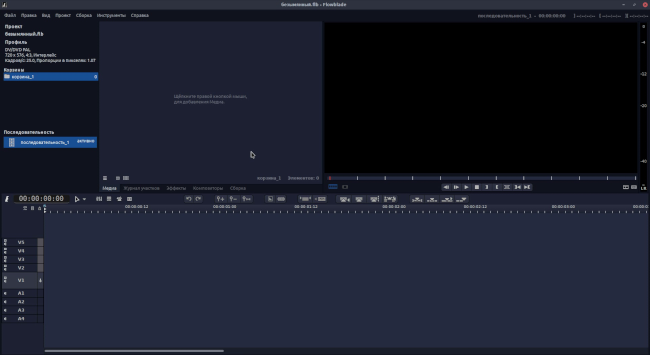

Установка
Руководство
Возможности
О проекте
Convert a file to PDF
URL of a file
Оглавление
/ Интерфейс Flowblade
Существует несколько макетов интерфейса Flowblade, ниже рассмотрен однооконный макет для Full HD экранов.
